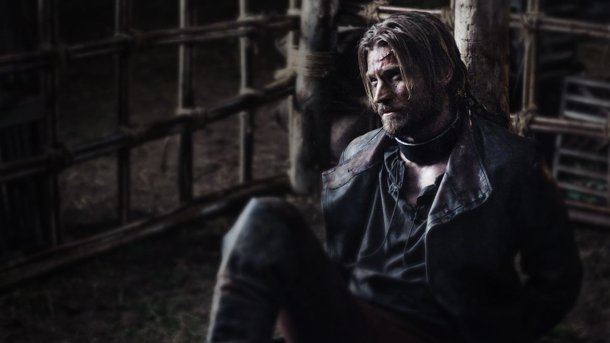
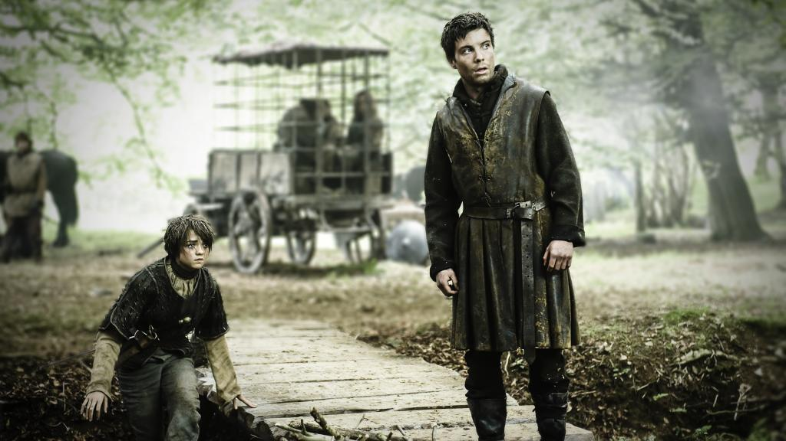
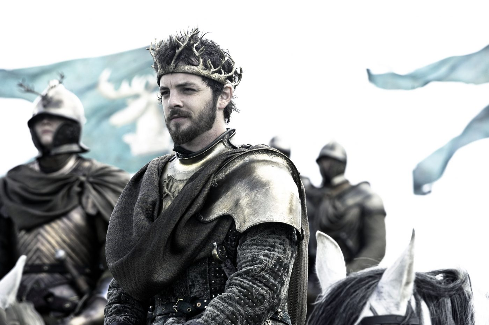
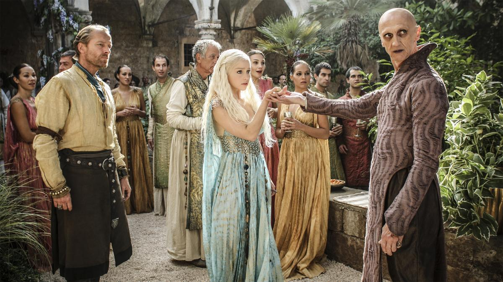
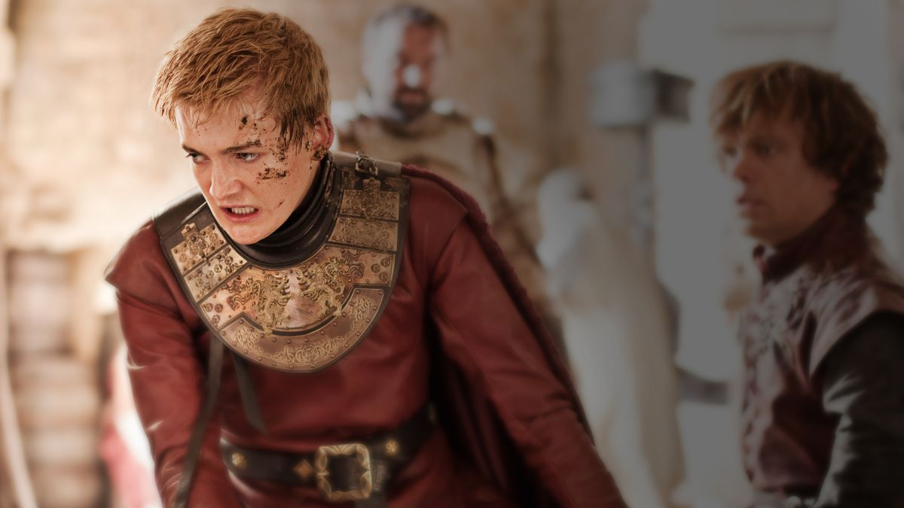
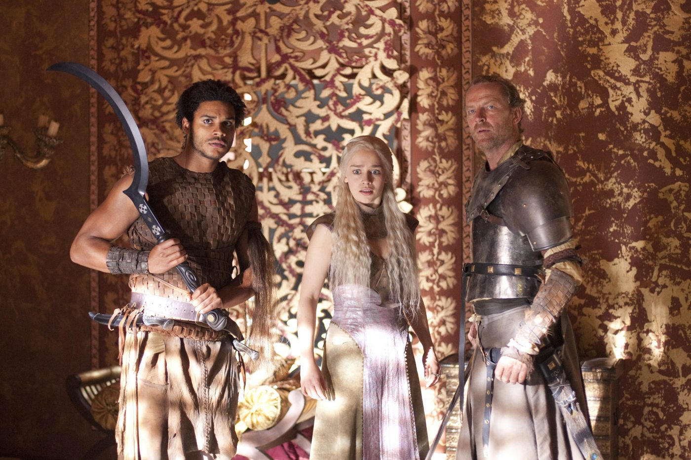
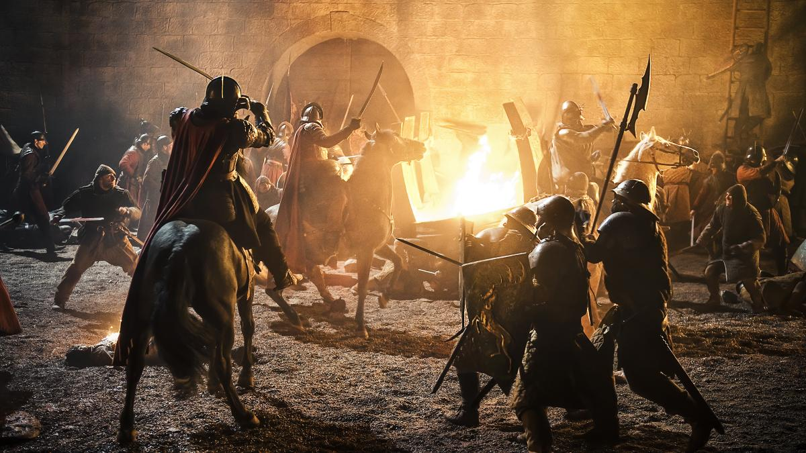
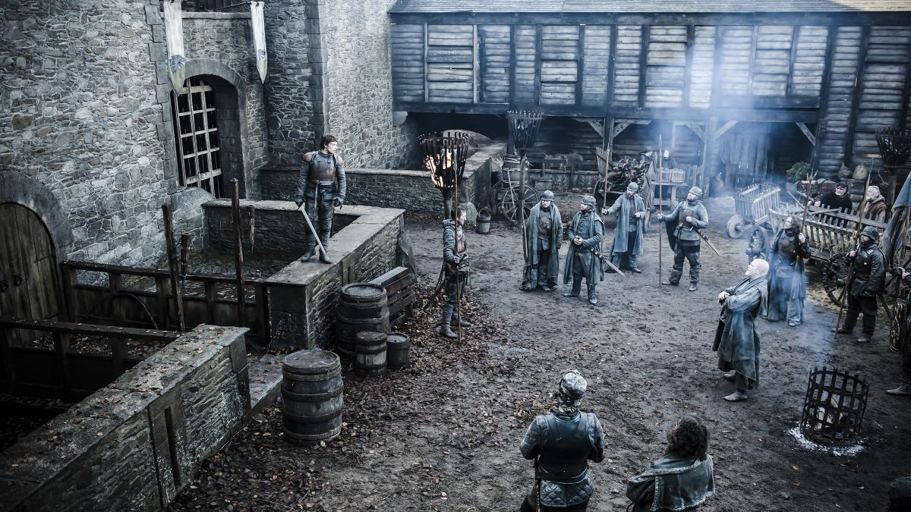

2ª TEMPORADA
Episódio 01 – The North Remembers
Sinopse: Como Robb Stark e seu exército no norte continuam em guerra contra os Lannisters, Tyrion vai à Porto Real para aconselhar Joffrey e moderar os excessos do jovem rei. Na Ilha de Pedra do Dragão, Stannis Baratheon, planeja uma invasão para reivindicar o trono de seu falecido irmão, aliando-se com Melisandre, uma misteriosa sacerdotisa de um deus misterioso. Do outro lado do mar, Daenerys, seus três jovens dragões e o khalasar atravessam o Deserto Vermelho em busca de aliados, ou de água. No Norte, Bran preside uma tediosa Winterfell, enquanto que para além da Muralha, Jon Snow e a Patrulha da Noite são obrigados a se abrigarem com um tortuoso selvagem.

Episódio 02 – The Night Lands
Sinopse: Na sequência de um expurgo sangrento na capital, Tyrion repreende Cersei por afastar os súditos do rei. Na estrada do Norte, Arya compartilha um segredo com Gendry, recruta da Patrulha da Noite. Com os suprimentos diminuindo, um dos batedores de Dany retorna com novas notícias de sua posição. Depois de nove anos nas mãos dos Stark, Theon Greyjoy se reúne com seu pai, Balon, que quer restaurar o antigo Reino das Ilhas de Ferro. Davos pede a Salladhor Saan, um pirata, para unir forças com Stannis e Melisandre para a invasão naval de Porto Real.

Episódio 03 – What Is Dead May Never Die
Sinopse: Na Fortaleza Vermelha, Tyrion planeja três alianças através da promessa de casamento. Catelyn chega às Terras da Tempestade para forjar sua própria aliança. Mas o Rei Renly, sua nova esposa Margaery e seu irmão Loras Tyrell tem outros planos. Em Winterfell, Luwin tenta decifrar os sonhos de Bran.

Episódio 04 – Garden of Bones
Sinopse: Joffrey pune Sansa pelas vitórias de Robb, enquanto Tyrion e Bronn lutam para temperar a crueldade do rei. Catelyn tenta convencer Stannis e Renly a renunciar as suas ambições e se unirem contra os Lannisters. Dany e seu khalasar esgotado chegam às portas de Qarth, uma cidade próspera, com paredes fortes e governantes que vão saudá-la fora deles.Tyrion coage um homem da rainha para ser seus olhos e ouvidos. Arya e Gendry são levados para Harrenhal, onde as suas vidas ficarão nas mãos da “Montanha”, Gregor Clegane. Davos deve rever seus caminhos antigos de contrabandista e levar Melisandre por meio de uma enseada secreta.

Episódio 05 – The Ghost of Harrenhal
Sinopse: O fim da rivalidade entre os Baratheon faz Catelyn fugir e Mindinho agir. Em Porto Real, a fonte de Tyrion lhe fala sobre a falha na estratégia de defesa de Joffrey e sobre uma misteriosa arma. Theon viaja para a Costa Pedregosa para se provar como um verdadeiro Homem de Ferro. Em Harrenhal, Arya recebe uma promessa de Jaqen H’ghar, um dos três prisioneiros que ela salvou dos Mantos Dourados. A Patrulha da Noite chega no Punho dos Primeiros Homens, uma antiga fortaleza onde eles esperam conter o avanço do exército selvagem.

Episódio 06 – The Old Gods and the New
Sinopse: Theon completa seu golpe de mestre. Em Porto Real, os Lannister enviam Myrcella para longe do perigo no último segundo. Arya fica cara a cara com uma visita supresa; Daenerys jura conseguir o que é seu por direito; Robb e Catelyn recebem notícias importantes, e Qhorin dá a Jon uma chance para se provar.

Episódio 07 – A Man Without Honor
Sinopse: Jaime se encontra com um parente distante; Daenerys recebe um convite para entrar na Casa dos Imortais; Theon lidera uma equipe de busca; Jon se perde no meio de uma região selvagem, e Cersei aconselha Sansa.

Episódio 08 – The Prince of Winterfell
Sinopse: Em Winterfell, Theon recebe uma visita e mantém controle do forte. Arya pede o pagamento de sua dívida final com Jaqen H’ghar de um modo que o desagrada. Robb é traído. Tyrion e Varys encontram algo em comum entre eles. Daenerys ignora os conselhos de Sor Jorah. Stannis e Davos se aproximam de seu destino, com o Cavaleiro das Cebolas recebendo uma recompensa.

Episódio 09 – Blackwater
Sinopse: Tyrion e os Lannister lutam por suas vidas quando a frota de Stannis ataca Porto Real.

Episódio 10 – Valar Morghulis
Sinopse: Tyrion acorda em uma situação diferente. O Rei Joffrey entrega prêmios aos seus vassalos. Enquanto Theon prepara seus homens para lutar, Meistre Luwin lhe oferece um último conselho. Brienne silencia Jaime, Arya recebe um presente de Jaqen, Daenerys vai à um lugar desconhecido e Jon prova-se para Qhorin.
